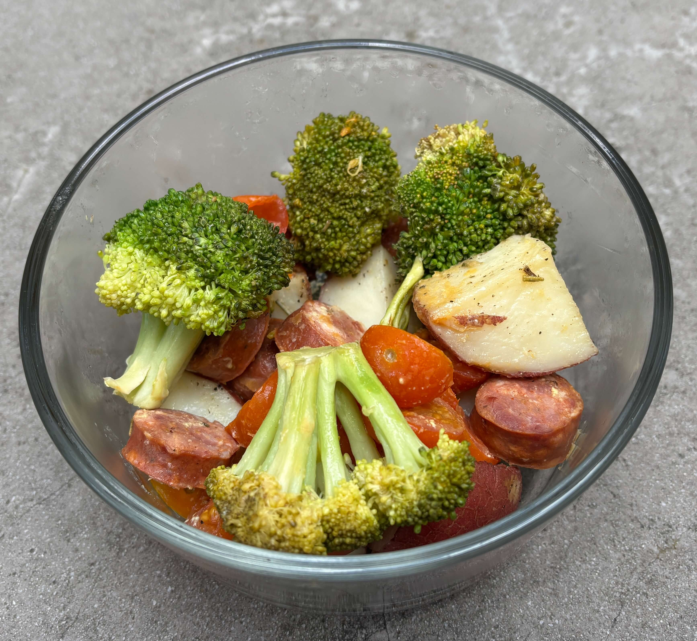

Home
Italian Sausage Bowl

4 servings
40 min
Ingredients
- 17 oz 5 links spicy pork sausage (cut into 3/4-inch pieces)
- 2 tablespoons olive oil
- 2 teaspoons yellow mustard
- 1 teaspoon of lemon juice
- salt and ground pepper
- 1 large or 2 small head of broccoli, cut into small florets
- 2 cups cherry tomatoes cut in half
- Optional: add a base like rice or roasted red potatoes
Steps
- Preheat oven to 450° F and line a sheet pan with foil or parchment paper.
- Place the sausage on the prepared baking sheet. Roast in the oven for 20 minutes.
- Meanwhile, in a small bowl whisk together olive oil, yellow mustard, lemon juice and salt and pepper.
- Remove the sausage from the oven, flip them and add broccoli and cherry tomatoes.
- Pour the mustard mixture over the veggies and toss well to combine.
- Return the baking sheet to the oven and roast for more 15-20 minutes or until the sausage is cooked through and the veggies are tender.
- Divide roasted veggies and sausage between four 22oz glass meal prep containers. Store in the fridge for up to 4 days.